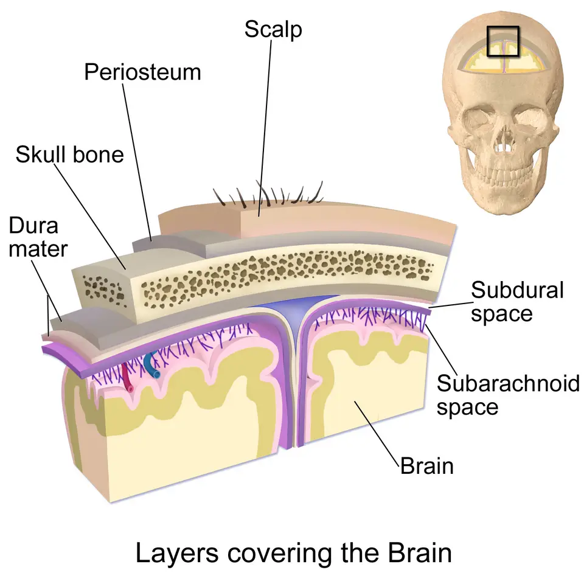

LOT_032 — S1.16 Raideur et douleur cervicales — Phase A : monographie du SSP et dix diagnostics différentiels
Une nuque douloureuse ou raide traduit le plus souvent une souffrance musculosquelettique bénigne, mais elle peut aussi révéler une fracture, une infection, un saignement ou une déchirure artérielleS2S6S8. Le médecin exclut donc d’abord ces urgences par l’anamnèse et l’examen, puis il localise la souffrance : axiale, radiculaire, médullaire, méningée, vasculaire ou haute entre atlas et axisS2S4. Il prescrit enfin selon l’AIPS (information professionnelle suisse) de chaque médicament, et il écrit « hors AIPS » lorsqu’une molécule ou une dose sort de ce cadreAIPS 47503AIPS 45031.
Ce cours de Phase A reprend les sources citées ; aucun médecin ne l’a encore validé cliniquement.
1. Définition
La cervicalgie est une douleur de la région du cou, isolée ou irradiée vers la tête, l’épaule ou le membre supérieurS2S4. La raideur de nuque désigne une limitation des mouvements du cou, ressentie par le patient ou constatée par l’examinateurS2S8. On qualifie la cervicalgie d’aiguë jusqu’à 3 semaines et de chronique au-delà de 12 semainesS12.
2. Épidémiologie (Suisse, puis Europe)
En Suisse, le service de rhumatologie des Hôpitaux universitaires de Genève (HUG) indique une prévalence des cervicalgies de 4,6 % en Europe occidentale, contre 3,5 % dans le mondeS2. L’incidence annuelle atteint 0,9 % en Europe occidentale, et la cervicalgie compte parmi les grandes causes d’années vécues avec incapacitéS2.
La Revue médicale suisse précise une prévalence de 6,3 % en Europe occidentale en 2010, avec 7,4 % chez les femmes et 5,2 % chez les hommesS3. Le pic de prévalence se situe vers 45 ans, mais toutes les tranches d’âge sont touchées, enfants et adolescents comprisS3. Les chiffres suisses et européens lus sont réunis dans un tableau daté.
Chiffres lus : cervicalgie, radiculopathie et causes graves
| Indicateur | Valeur | Population ou période | Source |
|---|---|---|---|
| Prévalence des cervicalgies | 4,6 % ; incidence 0,9 % | Europe occidentale, données reprises par les HUG en 2021 | S2 |
| Prévalence des cervicalgies aiguës et chroniques | 6,3 % ; femmes 7,4 %, hommes 5,2 % | Europe occidentale, 2010 | S3 |
| Adultes qui ont mal au cou au moins une fois par an | Près de la moitié | Allemagne | S12 |
| Prévalence des cervicobrachialgies | 83,2 pour 100 000 personnes | Revue suisse, 2015 | S4 |
| Radiculopathie cervicale « vraie » | 3,3 cas pour 1000 personnes ; rapport hommes-femmes 1,6 : 1 | Revue suisse, 2015 | S4 |
| Modifications radiologiques cervicales à la septième décennie | 85 %, le plus souvent asymptomatiques | Revue suisse, 2015 | S4 |
| Hémorragie sous-arachnoïdienne parmi les céphalées brutales d’intensité maximale | 5 à 10 % si début en 1 heure ou moins ; 10 à 15 % si début en 1 minute ou moins | Protocole des urgences des HUG, 2021 | S6 |
| Causes bénignes des céphalées brutales | 60 à 80 % | Protocole des urgences des HUG, 2021 | S6 |
| Myélopathie symptomatique qui s’aggrave d’au moins 1 point | 20 à 62 % entre 3 et 6 ans | Revue AO (Arbeitsgemeinschaft für Osteosynthesefragen) Spine, 2017 | S13 |
| Dissection artérielle méconnue lors d’une consultation antérieure | Un patient sur 6 | Registre international, 2026 | S19 |
La fréquence n’ordonne pas l’urgence : la radiculopathie dépasse largement l’hémorragie sous-arachnoïdienne, mais une céphalée brutale avec raideur impose un scanner le jour mêmeS4S6. Cette hiérarchie entre fréquence et gravité structure le classement des dix diagnostics, qui suit.
Les causes graves restent rares, mais elles se concentrent sur des terrains reconnaissablesS5S16. L’Inselspital de Berne observe que la spondylodiscite est de plus en plus diagnostiquée, car la population vieillit et le diabète, l’immunosuppression et la chirurgie rachidienne progressentS5. La dissection artérielle cervicale reste rare dans la population générale, alors qu’elle compte parmi les causes principales d’accident vasculaire cérébral du sujet jeuneS16.
Le classement des dix diagnostics croise la fréquence indicative et le rang d’exclusion E, qui guide le point 4 puis le point 10.
Classement des dix diagnostics : fréquence indicative et gravité
| Rang de fréquence | Diagnostic | Fréquence lue | Gravité | Source |
|---|---|---|---|---|
| 1 | DX.1 Cervicalgie commune non spécifique | Prévalence de 4,6 % à 6,3 % en Europe occidentale | — | S2S3 |
| 2 | DX.2 Radiculopathie cervicale dégénérative | 3,3 pour 1000 personnes | Urgente si déficit moteur rapide ou progressif | S4 |
| 3 | DX.3 Myélopathie cervicale dégénérative | Fréquence de population non chiffrée dans les sources lues ; aggravation chez 20 à 62 % des patients symptomatiques | 🚩 E6 | S13 |
| 4 | DX.4 Fracture du rachis cervical | Risque élevé dès 65 ans ou après un mécanisme dangereux | 🚩 E1 | S10 |
| 5 | DX.6 Hémorragie sous-arachnoïdienne | 5 à 15 % des céphalées brutales d’intensité maximale | 🚩 E3 | S6 |
| 6 | DX.8 Spondylodiscite cervicale | Incidence en hausse avec l’âge et les comorbidités | 🚩 E5 | S5 |
| 7 | DX.5 Méningite bactérienne aiguë | Évolution rapide, souvent incomplète chez le nourrisson et le sujet âgé | 🚩 E2 | S8 |
| 8 | DX.9 Syndrome de la dent couronnée | Sujet âgé, surtout la femme après 60 ans | — | S17 |
| 9 | DX.7 Dissection artérielle cervicale | Rare dans la population générale ; cause majeure d’accident vasculaire du sujet jeune | 🚩 E4 | S16 |
| 10 | DX.10 Subluxation atlanto-axoïdienne rhumatoïde | Polyarthrite séropositive, érosive et ancienne | 🚩 E7 | S2 |
Le rang de fréquence repose sur les chiffres lus et sur des terrains décrits ; il reste indicatif, car aucune source suisse ne compare directement ces dix diagnostics. Cette restriction relève d’une déduction écrite comme telle, et la numérotation DX garde celle des fichiers de Phase B.
Le rang E fixe l’ordre d’exclusion : fracture instable, méningite, hémorragie, dissection, infection rachidienne, compression médullaire, puis instabilité hauteS10S8S6S16S15S13S2.
3. Physiopathologie
Plusieurs structures du cou produisent la douleur : muscles, ligaments, articulations, disques, racines nerveuses, moelle, méninges et artèresS2S4. Chaque structure donne un syndrome différent, et l’examen cherche donc la structure souffrante avant la causeS2.
Le rachis cervical compte sept vertèbres ; l’atlas (C1) porte le crâne et l’axis (C2) porte la dent autour de laquelle l’atlas tourneS20. Selon les HUG, la moitié de la rotation du cou se fait entre atlas et axis, ce qui explique la raideur rotatoire des atteintes hautesS2. Les repères osseux du cou se lisent sur un schéma annoté.
Vertèbres cervicales : canal, foramens et jonction haute
Vertèbres cervicales : vue supérieure, profil, atlas et axis. OpenStax fournit ce schéma en couleurs sous licence CC BY 3.0S20.

Lisez d’abord seul ce schéma (vertèbres cervicales : vue supérieure, profil, atlas et axis) avant d’ouvrir la copie annotée.
La copie annotée (vertèbres cervicales : vue supérieure, profil, atlas et axis) porte les repères de la lecture guidée.
- 1. La dent de l’axis s’élève dans l’anneau de l’atlas ; un dépôt de cristaux autour d’elle définit la dent couronnéeS17.
- 2. Le foramen vertébral loge la moelle ; son rétrécissement dégénératif comprime la moelle et cause la myélopathieS4.
- 3. Le foramen transversaire laisse passer l’artère vertébrale, dont la déchirure réalise une dissectionS16.
- 4. La gouttière du nerf spinal guide la racine ; une hernie ou un ostéophyte l’écrase et cause la radiculopathieS4.
- 5. Le ligament transverse retient la dent ; sa destruction par la polyarthrite rhumatoïde permet la luxation atlanto-axoïdienneS2.
- 6. La septième vertèbre, dite proéminente, porte l’épineuse la plus saillante ; la deuxième porte la première épineuse palpableS2.
Ce que l’image décide. Le schéma situe chaque lésion sur sa structure ; il ne remplace jamais l’imagerie, qui se décide sur la clinique (point 9).

Une racine comprimée produit une douleur du membre supérieur, des paresthésies et une hypoesthésie dans son territoire distalS4. Cette compression associe une déformation mécanique et une irritation chimique, car des cytokines pro-inflammatoires entretiennent la douleur radiculaireS4. Chaque racine porte le nom de son étage : cinquième (C5), sixième (C6), septième (C7) et huitième racine cervicale (C8), puis première thoracique (T1)S4S21.
La moelle cervicale contient aussi les faisceaux destinés aux jambes ; une compression du cou peut donc perturber la marche et les sphinctersS4. La douleur médullaire paraît sourde, brûlante et diffuse, tandis que le déficit varie selon le niveau, la cinétique de compression et la réserve vasculaireS4. Une coupe de moelle annotée relie chaque faisceau à son signe.
Coupe transversale de moelle : faisceaux et signes
Coupe transversale de la moelle épinière. OpenStax fournit ce schéma et cette coupe histologique en couleurs sous licence CC BY 4.0S22.

Lisez d’abord seul ce schéma (coupe transversale de la moelle épinière) avant d’ouvrir la copie annotée.
La copie annotée (coupe transversale de la moelle épinière) porte les repères de la lecture guidée.
- 1. Les cordons postérieurs portent la sensibilité profonde ; leur atteinte élargit le polygone de sustentationS4.
- 2. Les cordons latéraux contiennent la voie motrice ; leur compression donne hyperréflexie, spasticité et signe de BabinskiS4.
- 3. La corne antérieure contient les motoneurones ; une lésion à l’étage comprimé produit faiblesse et amyotrophie segmentairesS22.
- 4. La racine antérieure sort de la moelle vers le foramen ; une hernie latérale peut la comprimer sans toucher la moelleS4.
- Une douleur faible n’exclut pas une myélopathie, car la maladresse des mains peut précéder toute douleurS4.
Ce que l’image décide. La coupe explique pourquoi une compression cervicale associe des signes radiculaires à l’étage et des signes médullaires au-dessous.

Le pus ou le sang dans l’espace sous-arachnoïdien irrite les méninges et provoque une raideur de nuque, une céphalée et parfois une altération de la conscienceS8S6. Les enveloppes du cerveau montrent où se loge ce sang ou ce pus.
Méninges : où s’accumulent le pus et le sang
Enveloppes du cerveau et espaces méningés. Blausen Medical fournit cette illustration en couleurs sous licence CC BY 3.0S23.

Lisez d’abord seul ce schéma (enveloppes du cerveau et espaces méningés) avant d’ouvrir la copie annotée.
La copie annotée (enveloppes du cerveau et espaces méningés) porte les repères de la lecture guidée.
- 1. La dure-mère tapisse l’os ; elle limite l’espace sous-dural, distinct de l’espace touché par la méningiteS23.
- 2. L’espace sous-arachnoïdien contient le liquide cérébrospinal ; le pus de la méningite et le sang de l’hémorragie s’y répandentS8S9.
- 3. Les vaisseaux cheminent dans cet espace ; la rupture d’un anévrisme y verse le sang sous pressionS9.
- 4. Le cerveau souffre de l’inflammation ou du saignement, ce qui explique confusion et comaS8.
- Une raideur absente ne permet pas d’exclure une méningite, surtout chez le nourrisson et le sujet âgéS8.
Ce que l’image décide. L’image montre pourquoi la ponction lombaire prélève le liquide où se trouvent le pus et la xanthochromie (point 9).

Une dissection artérielle naît d’une déchirure de la paroi ; l’hématome intramural rétrécit l’artère et peut emboliser vers le cerveauS18S16. Dans l’essai suisse TREAT-CAD, l’imagerie par résonance magnétique (IRM) montrait un hématome intramural chez la grande majorité des participantsS18.
Des cristaux de pyrophosphate de calcium déposés autour de la dent de l’axis déclenchent une inflammation aiguë : c’est le syndrome de la dent couronnéeS2S17. Dans la polyarthrite rhumatoïde, le pannus synovial détruit le ligament transverse de l’atlas, ce qui permet une luxation atlanto-axoïdienneS2. Les bactéries atteignent le disque par voie sanguine depuis la bouche, la gorge, la peau ou les poumons, ou après une chirurgie du rachisS5.
Dans la cervicalgie chronique, les facteurs psychosociaux entretiennent la douleur ; anxiété, conflits juridiques et mauvaise adaptation assombrissent le pronosticS2. Le tableau des structures douloureuses permet de relier chaque mécanisme à son diagnostic.
Structures douloureuses, mécanismes et diagnostics
| Structure | Mécanisme | Traduction clinique | Diagnostic | Source |
|---|---|---|---|---|
| Muscles, ligaments, articulations, disque | Contracture, troubles dégénératifs, sensibilisation | Douleur axiale mécanique, sans déficit | DX.1 | S2 |
| Racine nerveuse | Hernie discale ou ostéophyte, irritation chimique | Douleur du bras, paresthésies, réflexe diminué | DX.2 | S4 |
| Moelle cervicale | Canal rétréci, compression lente ou aiguë | Maladresse des mains, marche élargie, hyperréflexie | DX.3 | S4S13 |
| Os et ligaments après traumatisme | Fracture ou instabilité, rachis ankylosé fragile | Douleur médiane, paresthésies, déficit | DX.4 | S10S2 |
| Méninges | Pus dans l’espace sous-arachnoïdien | Fièvre, céphalée, raideur, confusion, purpura | DX.5 | S8 |
| Méninges et vaisseaux | Rupture d’anévrisme, sang sous-arachnoïdien | Céphalée brutale maximale, raideur, vomissements | DX.6 | S6S9 |
| Artère carotide ou vertébrale | Hématome intramural, sténose, embole | Douleur cervicale, céphalée, Horner, paralysie de nerf crânien | DX.7 | S18 |
| Disque et plateaux vertébraux | Infection hématogène ou postopératoire | Douleur d’effort, fièvre, protéine C réactive élevée | DX.8 | S5S15 |
| Ligaments péri-odontoïdiens | Cristaux de pyrophosphate de calcium | Douleur haute aiguë, rotation bloquée, fièvre | DX.9 | S17 |
| Ligament transverse de l’atlas | Pannus rhumatoïde, destruction ligamentaire | Douleur haute, signes médullaires | DX.10 | S2 |
4. Démarche diagnostique
La démarche commence par la question de l’urgence, car sept des dix diagnostics menacent la vie, la moelle ou le cerveau en quelques heures ou joursS10S8S6. Le médecin cherche d’abord un traumatisme, une fièvre avec atteinte de la conscience, une céphalée brutale, un déficit neurologique ou un terrain infectieuxS2.
Il classe ensuite la douleur en mécanique ou inflammatoire, selon l’horaire, la raideur matinale et la réponse aux anti-inflammatoires non stéroïdiens (AINS)S2. Il localise enfin le syndrome : axial, radiculaire, médullaire, méningé, vasculaire ou haut, avant de choisir l’examen qui trancheS2S4.
L’ordre d’exclusion des urgences fixe la question, le délai et l’examen de chaque rang E.
Ordre d’exclusion des urgences (rangs E1 à E7)
| Rang | Diagnostic | Question qui déclenche | Délai | Premier geste | Source |
|---|---|---|---|---|---|
| 🚩 E1 | DX.4 Fracture du rachis cervical | 65 ans ou plus, mécanisme dangereux ou paresthésies après traumatisme ? | Immédiat | Immobilisation en ligne, scanner cervical dans l’heure | S10S11 |
| 🚩 E2 | DX.5 Méningite bactérienne aiguë | Fièvre, céphalée, raideur et conscience altérée ? Purpura ? | Antibiotique dans l’heure | Hémocultures, ponction lombaire si sûre, ceftriaxone | S8 |
| 🚩 E3 | DX.6 Hémorragie sous-arachnoïdienne | Céphalée maximale en moins d’une heure, nouvelle ? | Le jour même | Scanner natif et angioscanner | S6S9 |
| 🚩 E4 | DX.7 Dissection artérielle cervicale | Douleur cervicale inhabituelle avec Horner, nerf crânien ou déficit ? | Le jour même | IRM et angiographie des vaisseaux du cou | S18S16 |
| 🚩 E5 | DX.8 Spondylodiscite cervicale | Douleur d’effort persistante, fièvre, diabète, immunosuppression, chirurgie ? | Rapide ; immédiat si déficit | IRM avec contraste, hémocultures avant antibiotique | S15S5 |
| 🚩 E6 | DX.3 Myélopathie cervicale dégénérative | Mains maladroites, chutes, troubles sphinctériens ? | Urgent si aggravation aiguë | IRM cervicale, avis chirurgical | S4S13 |
| 🚩 E7 | DX.10 Subluxation atlanto-axoïdienne rhumatoïde | Polyarthrite ancienne avec douleur haute ou signes neurologiques ? | Rapide | Radiographie dynamique, IRM si signes neurologiques | S2 |
Le rang E1 précède les autres, car une mobilisation intempestive d’un rachis instable peut créer une lésion médullaire définitiveS10. Le rang E2 vient ensuite, car le National Institute for Health and Care Excellence (NICE) impose l’antibiotique dans l’heure qui suit l’arrivée à l’hôpitalS8.
Le tableau mécanique ou inflammatoire contient les critères des HUG.
Douleur mécanique ou inflammatoire : critères des HUG
| Critère | Douleur mécanique | Douleur inflammatoire | Source |
|---|---|---|---|
| Horaire | Augmente au cours de la journée | Pire le matin | S2 |
| Activité | Aggrave | Parfois améliore | S2 |
| Réveils nocturnes | Au mouvement ou au changement de position | Spontanés, en deuxième partie de nuit | S2 |
| Raideur matinale | Brève | Plus de 30 minutes | S2 |
| Réponse aux AINS | Faible | Bonne | S2 |
| Causes à évoquer | Contracture, arthrose, hernie, myélopathie | Infection, microcristaux, polyarthrite, spondyloarthrite, néoplasie, dissection | S2 |
Une douleur inflammatoire impose une biologie avec protéine C réactive (CRP), car l’infection, les microcristaux et les rhumatismes inflammatoires l’élèventS2S15.
Le tableau comparatif des dix diagnostics croise terrain, signe clé, examen qui tranche, seuil et conduite.
Tableau comparatif des dix diagnostics
| Diagnostic | Fréquence | Terrain | Début | Douleur et raideur | Signe clé | Examen qui tranche | Résultat décisif | Conduite immédiate | Rang |
|---|---|---|---|---|---|---|---|---|---|
| DX.1 Cervicalgie commune | Prévalence 4,6 % (Europe occidentale)S2 | Adulte, pic vers 45 ansS3 | Progressif ou après posture | Axiale, mécaniqueS2 | Aucun drapeau rouge, examen neurologique normal | Aucun en phase aiguë de 0 à 3 semainesS12 | Diagnostic clinique après exclusion | Éducation et activationS12 | — |
| DX.2 Radiculopathie | 3,3 pour 1000S4 | Homme, 4e et 5e décenniesS4 | Aigu ou subaigu | Cervicobrachiale, insomnianteS4 | Spurling positif, déficit radiculaireS4 | IRM si déficit ou échecS4 | Hernie ou foramen rétréci concordant avec la racineS4 | Traitement conservateurS4 | Urgent si déficit rapide |
| DX.3 Myélopathie | Aggravation chez 20 à 62 % en 3 à 6 ansS13 | Sujet âgé, canal dégénératifS4 | Progressif | Sourde, diffuse, parfois absenteS4 | Maladresse des mains, marche élargie, LhermitteS4 | IRM cervicaleS14 | Compression avec hypersignal sur la séquence pondérée (T2) ; score mJOAS13S14 | Avis chirurgicalS13 | 🚩 E6 |
| DX.4 Fracture | Risque élevé dès 65 ansS10 | Mécanisme dangereux, rachis ankyloséS10S2 | Après traumatisme | MédianeS10 | Paresthésies, rotation impossible à 45°S10 | Scanner cervicalS11 | Fracture ou mauvais alignementS11 | Immobilisation en ligneS10 | 🚩 E1 |
| DX.5 Méningite | Évolution rapideS8 | Tout âge ; formes atypiques aux âges extrêmesS8 | Heures | Raideur, céphaléeS8 | Fièvre, céphalée, raideur, conscience altérée ; purpuraS8 | Ponction lombaire et hémoculturesS8 | Liquide cérébrospinal bactérien, rapport de glucose basS8 | Antibiotique dans l’heureS8 | 🚩 E2 |
| DX.6 Hémorragie sous-arachnoïdienne | 5 à 15 % des céphalées brutalesS6 | Plus de 40 ans, hypertension, cocaïne, alcoolS6 | En moins d’une minute à une heureS6 | Céphalée maximale, raideurS6 | Intensité d’emblée maximaleS6 | Scanner natif puis angioscannerS6 | Sang sous-arachnoïdien ; xanthochromie après 12 heuresS9 | Neurochirurgie, pression systolique à 160S6 | 🚩 E3 |
| DX.7 Dissection | Rare ; cause majeure d’accident vasculaire cérébral (AVC) du jeuneS16 | Sujet jeune, migraineS19 | Brutal ou progressif | Cervicalgie ou céphalée inhabituelleS18 | Horner, paralysie d’un nerf crânien, acouphèneS18 | IRM des vaisseaux du couS18 | Hématome intramuralS18 | Aspirine ou anticoagulantS16 | 🚩 E4 |
| DX.8 Spondylodiscite | En hausseS5 | Âgé, diabète, immunosuppression, chirurgieS5 | Subaigu | Douleur d’effort intenseS5 | Fièvre inconstante, CRP élevéeS15 | IRM avec contrasteS15 | Prise de contraste discale ; germe sur hémoculture ou biopsieS15 | Hémocultures avant antibiotiqueS15 | 🚩 E5 |
| DX.9 Dent couronnée | Sujet âgéS17 | Femme après 60 ansS17 | Aigu | Cervico-occipitale, rotation bloquéeS17 | Fièvre, CRP élevéeS17 | Scanner centré sur C1-C2S17 | Calcifications en couronne autour de la dentS17 | AINS ; exclure l’infectionS17 | — |
| DX.10 Polyarthrite et subluxation | Polyarthrite ancienneS2 | Polyarthrite séropositive et érosiveS2 | Progressif | Haute, inflammatoireS2 | Hyperréflexie, Babinski, nerfs crâniensS2 | Radiographie dynamique, IRMS2 | Écart atlas-dent anormal ou compressionS2 | Pas de manipulation, avis spécialiséS2 | 🚩 E7 |
Le tableau sert à l’exclusion ordonnée ; aucune ligne ne remplace l’examen neurologique complet, qui reste le pivot de la démarcheS2S4.
5. Anamnèse ciblée et drapeaux rouges
L’anamnèse précise d’abord le mode de début : une céphalée brutale se définit par sa vitesse d’installation, son intensité et son caractère nouveauS6. Elle recherche ensuite un traumatisme, une fièvre, un déficit, un cancer, une immunosuppression ou une injection de drogue intraveineuseS2.
Le médecin interroge sur la maladresse des mains, les chutes répétées et les troubles sphinctériens, car ces signes révèlent une myélopathie peu douloureuseS4. Il demande aussi les antécédents de polyarthrite rhumatoïde, de spondyloarthrite, de chirurgie rachidienne et de diabèteS2S5. Les drapeaux rouges et leurs conduites forment un tableau.
Drapeaux rouges : hypothèse et conduite
| Drapeau rouge | Hypothèse | Conduite | Source |
|---|---|---|---|
| Fièvre, céphalée, troubles visuels | Méningite, dissection, dent couronnée | Examen méningé et neurologique, CRP, hospitalisation si conscience altérée | S2S8 |
| Paresthésies, déficit, troubles de l’équilibre ou des sphincters, signe de Lhermitte | Radiculopathie ou myélopathie | Examen neurologique complet, IRM | S2S4 |
| Cancer ou antécédent de cancer, perte de poids inexpliquée, adénopathie cervicale | Métastase, néoplasie | Imagerie et biologie rapides | S2 |
| Douleur nocturne persistante | Infection, tumeur, inflammation | CRP, IRM selon le contexte | S2 |
| Rhumatisme inflammatoire connu | Subluxation atlanto-axoïdienne, fracture du rachis ankylosé | Radiographie dynamique, IRM si signes neurologiques | S2 |
| Immunosuppression, injection de drogue intraveineuse | Spondylodiscite, abcès épidural | IRM avec contraste, hémocultures | S2S15 |
| Traumatisme | Fracture, instabilité, dissection | Règle canadienne, immobilisation, scanner | S2S10 |
| Céphalée d’intensité maximale en moins d’une heure | Hémorragie sous-arachnoïdienne | Règle d’Ottawa, scanner le jour même | S6 |
| Purpura qui ne s’efface pas à la pression | Infection à méningocoque | Antibiotique sans attendre l’hôpital si le transfert tarde | S8 |
Un seul drapeau rouge suffit pour sortir de la cervicalgie commune ; le médecin consigne alors l’hypothèse grave et le délai de l’examen.
Les drapeaux jaunes signalent un risque de chronicité : douleur permanente, conflit médico-légal, arrêt de travail prolongé, catastrophisme, dépression ou anxiétéS2. Les drapeaux jaunes et les facteurs de risque orientent l’éducation et la reprise.
Drapeaux jaunes et facteurs de risque de cervicalgie
| Catégorie | Élément | Conséquence pratique | Source |
|---|---|---|---|
| Drapeau jaune | Douleur permanente, diurne et nocturne, rapportée à un accident ancien | Évaluer le vécu et les attentes avant tout examen supplémentaire | S2 |
| Drapeau jaune | Contraste entre le handicap et l’absence de lésion visible | Éviter la multiplication des imageries | S2 |
| Drapeau jaune | Arrêt de travail de longue durée, conflit médico-légal | Planifier la reprise et coordonner les intervenants | S2S12 |
| Facteur non modifiable | Âge moyen, sexe féminin ; l’arthrose n’est pas un facteur de risque | Ne pas attribuer la douleur à l’arthrose visible | S2 |
| Facteur modifiable | Troubles psychologiques, tabac, manque d’activité physique | Encourager l’activité, protectrice selon les HUG | S2 |
| Facteur professionnel | Travail répétitif, flexion prolongée du cou, souris éloignée, faible soutien, insécurité de l’emploi | Adapter le poste et les pauses | S2S3 |
Les questions ciblées traduisent chaque réponse inquiétante en hypothèse.
Questions ciblées et réponses qui inquiètent
| Question | Réponse qui inquiète | Hypothèse | Source |
|---|---|---|---|
| Combien de temps la douleur a-t-elle mis pour atteindre son maximum ? | Moins d’une minute ou moins d’une heure | DX.6 | S6 |
| Avez-vous chuté, plongé ou subi un accident ? | Chute de plus de 1 mètre ou de 5 marches, plongeon, éjection | DX.4 | S10 |
| Avez-vous de la fièvre, des taches sur la peau, une confusion ? | Fièvre avec purpura ou confusion | DX.5 | S8 |
| Vos mains sont-elles maladroites, tombez-vous ? | Boutons difficiles, chutes répétées | DX.3 | S4 |
| La douleur descend-elle dans le bras ? | Douleur et paresthésies dans un territoire | DX.2 | S4 |
| Avez-vous une paupière tombante, un bruit dans l’oreille ? | Horner, acouphène pulsatile | DX.7 | S18 |
| Avez-vous du diabète, une immunosuppression, une opération du dos ? | Oui, avec douleur d’effort croissante | DX.8 | S5 |
| Avez-vous déjà eu des crises de goutte ou de pseudogoutte ? | Oui, chez une personne âgée | DX.9 | S17 |
| Avez-vous une polyarthrite rhumatoïde ancienne ? | Oui, avec douleur haute ou paresthésies | DX.10 | S2 |
6. Examen physique ciblé, région par région
L’examen commence par les constantes et l’état de conscience, puis il progresse du cou vers les membres, les méninges et les vaisseauxS2S7. Après un traumatisme, le médecin ne doit évaluer la mobilité qu’en l’absence de facteur à haut risque, selon la règle canadienneS10. Chaque région a sa fenêtre : état général, inspection et palpation, mobilité, racines, moelle, méninges, vaisseaux et nerfs crâniens et organes voisins.
État général : constantes, conscience et peau
| Élément | Technique | Seuil ou anomalie | Interprétation et conduite | Source |
|---|---|---|---|---|
| Constantes | Température, fréquence cardiaque, respiration, tension, saturation | Fièvre, tachycardie, hypotension | Sepsis ou méningite : hospitalisation | S7S8 |
| Conscience | Score de Glasgow et pupilles | Glasgow de 9 ou moins, pupilles anormales | Pas de ponction lombaire avant imagerie | S7S8 |
| Peau | Inspection de tout le corps, conjonctives comprises | Pétéchies ou purpura de plus de 2 mm qui ne s’efface pas | Méningocoque probable : antibiotique immédiat | S8 |
| Perfusion | Temps de recoloration, marbrures | Allongé | Choc septique | S7 |
| Nourrisson | Fontanelle à 45°, tonus axial | Fontanelle bombée, tête qui tombe en arrière | Méningite possible | S7 |
Inspection et palpation du cou
| Élément | Technique | Anomalie | Interprétation | Source |
|---|---|---|---|---|
| Statique | Observer le rachis entier et la posture pendant le déshabillage | Attitude asymétrique, torticolis | Contracture, cause locale à préciser | S2 |
| Peau et masses | Inspecter et palper | Masse, adénopathie cervicale | Néoplasie ou infection | S2 |
| Épineuses | Palper de la deuxième, première palpable, à la septième, la plus saillante | Douleur médiane élective | Fracture après traumatisme ; spondylodiscite si fièvre | S2S10 |
| Muscles | Palper les paravertébraux et les trapèzes | Points sensibles, spasme, allodynie | Cervicalgie commune ou myofasciale | S2 |
Mobilité cervicale : mesures et limites
| Mouvement | Technique | Valeur ou seuil | Interprétation | Source |
|---|---|---|---|---|
| Flexion et extension | Distance menton-sternum | Distance augmentée | Raideur douloureuse ou méningée | S2 |
| Rotation | Patient assis, examinateur derrière lui | Moitié de la rotation entre atlas et axis | Rotation bloquée : atteinte haute, dent couronnée | S2S17 |
| Rotation après traumatisme | Rotation active, seulement si risque bas | 45° à gauche et à droite | Impossible : immobilisation et imagerie | S10 |
| Inclinaison latérale | Distance tragus-épaule | Asymétrie | Contracture ou atteinte unilatérale | S2 |
Le médecin ne teste jamais la mobilité devant un facteur à haut risque de fracture, car le mouvement peut déplacer un fragment instableS10.
Racines cervicales : territoires, forces et réflexes
Dermatomes du corps : territoires sensitifs des racines. OpenStax fournit ce schéma en couleurs sous licence CC BY 4.0S21.

Lisez d’abord seul ce schéma (dermatomes du corps : territoires sensitifs des racines) avant d’ouvrir la copie annotée.
La copie annotée (dermatomes du corps : territoires sensitifs des racines) porte les repères de la lecture guidée.
- 1. Les territoires de la deuxième et de la troisième racine cervicale (C3 incluse) couvrent la nuque et l’angle de la mâchoireS21.
- 2. Les territoires de la troisième et de la quatrième racine (C4 incluse) couvrent la pèlerine des épaulesS21.
- 3. Les territoires C5 et C6 suivent la face latérale du bras et de l’avant-brasS21.
- 4. Les territoires C6 à C8 couvrent la main ; une hypoesthésie distale localise la racineS21S4.
- 5. Les territoires C8 et T1 longent le bord médial de l’avant-brasS21.
- Une hypoesthésie de toute la main, sans territoire, oriente plutôt vers une myélopathie ou une neuropathieS4.
Ce que l’image décide. La carte localise la racine par la topographie sensitive ; la concordance avec la force et le réflexe confirme le niveau.

| Racine | Disque en cause | Part des radiculopathies | Faiblesse | Réflexe diminué | Source |
|---|---|---|---|---|---|
| C5 | C4-C5 | 2 % | Deltoïde | Deltoïdien et pectoral | S4 |
| C6 | C5-C6 | 19 % | Fléchisseurs du coude | Brachioradial | S4 |
| C7 | C6-C7 | 69 % | Extenseurs | Tricipital | S4 |
| C8 | C7-T1 | 10 % | Muscles intrinsèques de la main | Cubito-pronateur | S4 |
| Manœuvre | Technique | Résultat positif | Interprétation | Source |
|---|---|---|---|---|
| Spurling | Compression axiale avec rotation ipsilatérale et extension | Reproduction de la douleur radiculaire | Argument pour une radiculopathie | S4 |
| Abduction de l’épaule | Main posée sur la tête | Soulagement de la douleur radiculaire | Argument pour une radiculopathie | S2 |
La racine C7 est la plus souvent touchée, devant la racine C6, et plus de 90 % des maladies discales symptomatiques concernent les espaces C5-C6 et C6-C7S4.
Signes médullaires à rechercher
| Signe | Technique | Anomalie | Interprétation | Source |
|---|---|---|---|---|
| Réflexes | Réflexes ostéotendineux des quatre membres, clonus | Hyperréflexie, clonus | Atteinte de la voie motrice | S4S2 |
| Réflexe cutané plantaire | Stimulation plantaire | Extension du gros orteil (Babinski) | Atteinte pyramidale | S4 |
| Tonus | Mobilisation passive | Spasticité, hypertonie | Compression médullaire | S4 |
| Marche | Marche spontanée et en tandem | Polygone de sustentation élargi, chutes | Myélopathie | S4 |
| Signe de Lhermitte | Flexion du cou | Décharge électrique dans le dos ou les membres | Souffrance médullaire | S4 |
| Sphincters | Interrogatoire ciblé | Incontinence urinaire ou fécale | Myélopathie avancée : urgence | S4 |
Des signes radiculaires à l’étage et médullaires au-dessous peuvent coexister ; le médecin examine donc toujours les membres inférieurs devant une douleur cervicaleS4.
Signes méningés : adulte, enfant et nourrisson
| Signe | Technique | Anomalie | Interprétation | Source |
|---|---|---|---|---|
| Raideur de nuque | Flexion passive, patient couché | Résistance ou réticence à bouger le cou | Irritation méningée | S8S7 |
| Menton-sternum | Demander de poser le menton sur le sternum | Impossible | Méningite chez l’enfant | S7 |
| Nourrisson | Observer les pleurs à la mobilisation | Pleurs aigus inconsolables, irritabilité | Méningite possible malgré l’absence de raideur | S7S8 |
| Photophobie | Interrogatoire | Présente | Méningite ou hémorragie | S7 |
NICE rappelle que la fièvre et la raideur manquent plus souvent chez le nourrisson ; leur absence n’écarte donc pas la méningiteS8.
Vaisseaux et nerfs crâniens
| Élément | Technique | Anomalie | Interprétation | Source |
|---|---|---|---|---|
| Pupilles et paupières | Comparer les deux côtés | Syndrome de Horner | Dissection carotidienne possible | S18 |
| Nerfs crâniens | Examen complet | Paralysie d’un nerf crânien | Dissection ou atteinte haute rhumatoïde | S18S2 |
| Audition | Interrogatoire | Acouphène | Symptôme local de dissection | S18 |
| Déficit focal | Examen neurologique | Hémiparésie, aphasie, troubles visuels | Ischémie : filière AVC immédiate | S16 |
Dans l’essai TREAT-CAD, une part notable des patients présentait seulement des symptômes locaux, sans ischémie : douleur cervicale, céphalée, Horner, paralysie de nerf crânien ou acouphèneS18.
Organes voisins : douleurs projetées vers le cou
| Organe | Signe à chercher | Diagnostic évoqué | Source |
|---|---|---|---|
| Épaule | Douleur reproduite par la mobilisation de l’épaule | Tendinopathie, conflit sous-acromial | S2S4 |
| Défilé thoracique | Douleur positionnelle du membre supérieur | Syndrome du défilé | S2 |
| Plexus brachial | Douleur intense de l’épaule puis amyotrophie | Syndrome de Parsonage-Turner | S4 |
| Nerfs périphériques | Percussion du canal carpien | Syndrome du tunnel carpien | S4 |
| Viscères | Examen de l’œsophage et des apex pulmonaires | Douleur viscérale projetée | S2 |
| Cœur et vaisseaux | Examen cardiovasculaire | Cause vasculaire ou cardiovasculaire | S2 |
7. Approche syndromique
Cinq syndromes regroupent les dix diagnostics : axial, radiculaire, médullaire, méningé et haut atlanto-axoïdien, auxquels s’ajoute le syndrome vasculaireS2S4. Le syndrome guide l’examen qui tranche, alors que la cause se confirme ensuite par l’imagerie ou la biologieS2. Le tableau des syndromes associe chacun à ses diagnostics et à son premier examen.
Syndromes cervicaux et diagnostics
| Syndrome | Signes | Diagnostics | Premier examen | Source |
|---|---|---|---|---|
| Axial | Douleur du cou sans irradiation, examen neurologique normal | DX.1 ; fracture si traumatisme | Aucun en phase aiguë, sauf drapeau rouge | S12S10 |
| Radiculaire | Douleur du bras, paresthésies, réflexe diminué | DX.2 ; DX.8 si fièvre | IRM si déficit, échec ou drapeau rouge | S4 |
| Médullaire | Maladresse, marche élargie, hyperréflexie, sphincters | DX.3, DX.10, DX.8 avec abcès | IRM cervicale | S4S2S15 |
| Méningé | Raideur, céphalée, fièvre ou céphalée brutale | DX.5, DX.6 | Scanner, ponction lombaire, hémocultures | S8S6 |
| Vasculaire | Douleur inhabituelle, Horner, nerf crânien, déficit | DX.7 | IRM et angiographie du cou | S18 |
| Haut atlanto-axoïdien | Douleur haute, rotation bloquée, fièvre ou polyarthrite | DX.9, DX.10 | Scanner C1-C2 ou radiographie dynamique | S17S2 |
Un même patient peut cumuler deux syndromes ; une spondylodiscite associe par exemple douleur axiale, fièvre et compression radiculaire ou médullaireS5.
8. Diagnostic positif et critères
Le diagnostic positif exige une concordance clinique et radiologique ; une image dégénérative isolée ne prouve jamais l’origine de la douleurS2S4. Les HUG rappellent qu’une méta-analyse de 31 études ne trouvait aucune différence à l’IRM entre douleur cervicale, entorse et témoins sans douleurS2.
La myélopathie se classe par le score modifié de la Japanese Orthopaedic Association (mJOA) : légère de 15 à 17, modérée de 12 à 14, sévère à 11 ou moinsS13. Les critères diagnostiques et la gravité de la myélopathie se lisent dans deux tableaux.
Critères du diagnostic positif, diagnostic par diagnostic
| Diagnostic | Critère positif | Ce qui ne suffit pas | Source |
|---|---|---|---|
| DX.1 Cervicalgie commune | Anamnèse et examen sans argument structurel ni drapeau rouge | Une contracture ou une arthrose visible | S12S2 |
| DX.2 Radiculopathie | Douleur, déficit et réflexe concordants avec une compression à l’IRM | Une hernie asymptomatique | S4 |
| DX.3 Myélopathie | Signes médullaires et compression concordante ; hypersignal T2 péjoratif | Une sténose sans signe clinique | S4S14 |
| DX.4 Fracture | Fracture ou mauvais alignement au scanner reformaté | Une radiographie normale chez l’adulte à risque | S11 |
| DX.5 Méningite | Clinique, sang et liquide cérébrospinal concordants | L’absence de raideur ou de purpura | S8 |
| DX.6 Hémorragie | Sang au scanner natif, ou xanthochromie en spectrophotométrie | Le soulagement sous antalgique | S9S6 |
| DX.7 Dissection | Hématome intramural ou sténose à l’IRM | Un examen neurologique normal | S18 |
| DX.8 Spondylodiscite | IRM avec contraste et germe identifié | Une fièvre absente | S15 |
| DX.9 Dent couronnée | Clinique aiguë, inflammation et calcifications au scanner | Une calcification isolée sans exclure l’infection | S17 |
| DX.10 Subluxation | Instabilité à la radiographie dynamique ou compression à l’IRM | Une radiographie statique | S2 |
Gravité de la myélopathie selon le score mJOA
| Gravité | Score mJOA | Recommandation | Force | Source |
|---|---|---|---|---|
| Légère | 15 à 17 | Chirurgie ou rééducation structurée supervisée, avec suivi rapproché | Suggestion | S13S14 |
| Modérée | 12 à 14 | Chirurgie | Recommandation forte | S13 |
| Sévère | 11 ou moins | Chirurgie | Recommandation forte | S13 |
| Compression sans myélopathie | Aucun signe | Pas de chirurgie prophylactique ; information et suivi | Suggestion | S13 |
La revue AO Spine de 2025 confirme que la chirurgie constitue une option valable de la myélopathie légèreS14.
9. Examens complémentaires
Les examens répondent à une hypothèse précise : en douleur aiguë de 0 à 3 semaines sans argument structurel, l’imagerie n’est en général pas indiquéeS12. Les HUG réservent la radiographie aux patients de plus de 50 ans, aux symptômes modérés à sévères au-delà de 6 semaines, aux déficits, aux traumatismes et aux risques infectieux ou tumorauxS2.
L’IRM recherche une compression radiculaire ou médullaire, une infection, une inflammation ou une néoplasie, tandis que le scanner sert la fracture et les calcificationsS2S17. Le tableau des indications d’imagerie et des seuils précise délai et interprétation.
Imagerie : indication, délai, seuil et interprétation
| Examen | Indication | Délai ou seuil | Interprétation | Conduite | Source |
|---|---|---|---|---|---|
| Aucun | Douleur aiguë sans argument structurel | De 0 à 3 semaines | Pas d’imagerie en général | Activation, réévaluation | S12 |
| Radiographie face et profil | Plus de 50 ans, plus de 6 semaines, déficit, traumatisme, infection, néoplasie | Corréler à la clinique | Arthrose fréquente et peu spécifique | IRM si doute | S2 |
| Scanner cervical | Traumatisme adulte à haut risque | Dans l’heure qui suit l’identification du risque | Fracture, mauvais alignement | Avis rachidien | S11 |
| IRM cervicale en plus du scanner | Signes neurologiques après traumatisme | Le jour même | Lésion médullaire ou ligamentaire | Avis rachidien | S11 |
| Angioscanner ou angio-IRM du cou | Suspicion de lésion vasculaire | Le jour même | Dissection, occlusion | Filière neurovasculaire | S11S18 |
| IRM avec contraste | Suspicion d’infection rachidienne | Avant l’antibiotique si l’état le permet | Prise de contraste discale, abcès | Hémocultures, biopsie | S15 |
| Scanner natif cérébral puis angioscanner | Céphalée brutale avec règle d’Ottawa positive | Sensibilité proche de 100 % dans les 6 heures | Sang sous-arachnoïdien, anévrisme | Neurochirurgie | S6 |
| Scanner centré sur C1-C2 | Douleur haute aiguë fébrile du sujet âgé | Calcifications persistantes environ 3 mois | Dent couronnée | Traitement anti-inflammatoire | S17 |
| Radiographie dynamique | Polyarthrite séropositive érosive avec douleur cervicale | Flexion et extension | Instabilité atlanto-axoïdienne | IRM si anormale | S2 |
| Électroneuromyographie (ENMG) | Doute entre racine, plexus et nerf périphérique | Perturbée dès 3 semaines de compression | Atteinte radiculaire | Concordance avec l’IRM | S4S2 |
Après un traumatisme, la règle canadienne classe le risque cervical : 65 ans ou plus, mécanisme dangereux ou paresthésies des membres définissent le haut risqueS10. La règle canadienne pas à pas fixe l’immobilisation et de l’imagerie.
Règle canadienne du rachis cervical (NICE)
| Étape | Critère | Décision | Source |
|---|---|---|---|
| 1. Haut risque | 65 ans ou plus ; chute de plus de 1 mètre ou de 5 marches ; charge axiale comme un plongeon ; collision rapide, tonneau, éjection ; paresthésies des membres | Immobilisation en ligne et imagerie | S10 |
| 2. Bas risque | Collision arrière mineure ; position assise confortable ; marche depuis l’accident ; absence de douleur médiane ; douleur cervicale retardée | Tester la rotation active | S10 |
| 3. Rotation | Rotation active de 45° à gauche et à droite | Possible : ni immobilisation ni imagerie ; impossible : immobilisation et imagerie | S10 |
| Adulte avec traumatisme crânien | Glasgow de 12 ou moins, intubation, polytraumatisme | Scanner cervical dans l’heure | S11 |
| Enfant | Règle difficile à appliquer ; tenir compte du développement | Scanner seulement si critère précis ; sinon radiographies de 3 vues | S10S11 |
Le scanner chez l’adulte remplace la radiographie, car il reformate tout le rachis cervical en plusieurs plansS11.
Devant une céphalée brutale, la règle d’Ottawa impose une imagerie si l’un de six critères est présent ; elle exclut alors l’hémorragie avec une sensibilité de 100 %S6. La règle d’Ottawa et la ponction lombaire précisent seuils et délais.
Céphalée brutale : règle d’Ottawa, scanner et ponction lombaire
| Élément | Critère ou seuil | Interprétation | Source |
|---|---|---|---|
| Population | Céphalée intense maximale en moins d’une heure, sans déficit neurologique | Règle applicable | S6 |
| Critères d’Ottawa | Douleur ou raideur de nuque ; âge de 40 ans ou plus ; perte de connaissance ; début à l’effort ; intensité maximale immédiate ; flexion de nuque limitée | Un critère suffit pour l’imagerie | S6 |
| Exclusions | Traumatisme crânien, céphalées récidivantes à 3 épisodes, dérivation, tumeur cérébrale ou hémorragie antérieure | Règle non applicable | S6 |
| Scanner dans les 6 heures | Normal et relu par un radiologue | Pas de ponction lombaire de routine | S9S6 |
| Scanner après 6 heures | Normal | Ponction lombaire à 12 heures au moins du début | S9S6 |
| Ponction lombaire | Pression d’ouverture, centrifugation, xanthochromie, culture | Xanthochromie : hémorragie ; ponction traumatique dans 10 à 15 % des cas | S6S9 |
| Angioscanner | Hémorragie confirmée | Cherche l’anévrisme et guide le traitement | S9 |
Devant une méningite suspectée, le médecin doit prélever hémocultures, formule sanguine, CRP ou procalcitonine, glycémie et amplification génique (PCR) sur sang totalS8. Les analyses du liquide et du sang et les contre-indications à la ponction figurent dans un tableau.
Méningite : examens du sang, du liquide cérébrospinal et contre-indications
| Volet | Contenu | Point d’interprétation | Source |
|---|---|---|---|
| Sang | Hémoculture, leucocytes avec neutrophiles, CRP ou procalcitonine, glucose, PCR méningocoque et pneumocoque, test du virus de l’immunodéficience humaine (VIH) | Prélever avant l’antibiotique si cela ne le retarde pas | S8 |
| Liquide cérébrospinal | Globules rouges et blancs avec formule, protéines, glucose, Gram, culture, PCR | Rapport de glucose liquide sur sang : mesurer la glycémie juste avant la ponction | S8 |
| Contre-indications à la ponction | Purpura étendu ou rapidement extensif, infection au point de ponction, signes d’hypertension intracrânienne, Glasgow de 9 ou moins | Différer la ponction, ne jamais différer l’antibiotique | S8 |
| Ordre des tubes en pédiatrie aux HUG | Bactériologie, virologie, puis liquides biologiques en dernier | Le dernier tube reste le plus clair pour la numération | S7 |
Dans une infection rachidienne, la CRP reste le paramètre le plus utile au diagnostic et au suivi, car les leucocytes peuvent rester normauxS15. Si les hémocultures restent négatives, une biopsie guidée par scanner cible la partie du disque qui prend le contrasteS15. Une échocardiographie permet de chercher une endocardite associée, et le médecin examine la peau, la gorge et les dentsS5.
Devant une douleur haute inflammatoire avec polyarthrite, le médecin dose facteur rhumatoïde et anticorps anti-peptides cycliques citrullinés (anti-CCP), et il radiographie mains et piedsS2.
10. Arbre décisionnel
Le médecin suit un algorithme à embranchements qui reprend chaque nœud avec le constat, la conduite, le délai et l’examenS2S10S8.
- 🚩 E1 — Si un traumatisme s’accompagne d’un facteur à haut risque, le médecin immobilise le rachis en ligne et demande un scanner cervical dans l’heureS10S11.
- 🚩 E2 — Si fièvre, céphalée, raideur et conscience altérée coexistent, le médecin prélève puis donne l’antibiotique dans l’heure, sans attendre la ponctionS8.
- 🚩 E3 — Si la céphalée atteint son maximum en moins d’une heure, le médecin applique la règle d’Ottawa et demande un scanner natif puis un angioscannerS6.
- 🚩 E4 — Si une douleur cervicale inhabituelle s’associe à un Horner, à un nerf crânien atteint ou à un déficit, le médecin demande une IRM des vaisseauxS18S16.
- 🚩 E5 — Si la douleur d’effort persiste avec fièvre, CRP élevée ou terrain fragile, le médecin demande IRM avec contraste et hémocultures avant tout antibiotiqueS15.
- 🚩 E6 — Si les mains deviennent maladroites ou la marche s’élargit, le médecin demande une IRM cervicale et un avis chirurgicalS4S13.
- 🚩 E7 — Si une polyarthrite ancienne cause une douleur haute ou des signes neurologiques, le médecin doit demander une radiographie dynamique puis une IRMS2.
- Si la douleur haute fébrile du sujet âgé laisse un examen neurologique normal, le médecin demande un scanner centré sur la dent après avoir exclu l’infectionS17.
- Si la douleur descend dans un territoire radiculaire sans déficit progressif, le médecin traite de façon conservatrice et réévalueS4.
- Si aucun drapeau rouge n’apparaît et que l’examen neurologique reste normal, le médecin retient une cervicalgie commune et privilégie l’activationS12.
Algorithme détaillé : constat, conduite, délai, examen
| Nœud | Constat | Conduite | Délai | Examen | Si négatif | Source |
|---|---|---|---|---|---|---|
| 1 | Traumatisme à haut risque | Immobilisation en ligne, filière traumatologique | Immédiat | Scanner cervical | Règle canadienne pour le bas risque | S10S11 |
| 2 | Fièvre, céphalée, raideur, confusion ou purpura | Hospitalisation, antibiotique, dexaméthasone | Moins d’une heure | Hémocultures, ponction si sûre | Chercher une autre infection | S8 |
| 3 | Céphalée brutale maximale | Urgences, antalgie efficace | Le jour même | Scanner natif et angioscanner | Ponction après 12 heures si scanner tardif | S6S9 |
| 4 | Douleur inhabituelle, Horner, nerf crânien | Filière neurovasculaire | Le jour même | IRM et angiographie du cou | Autre cause de céphalée | S18S16 |
| 5 | Douleur d’effort, fièvre, CRP élevée, terrain | Hospitalisation, infectiologie | Rapide ; immédiat si déficit | IRM avec contraste, hémocultures, biopsie | Dent couronnée, tumeur | S15S5 |
| 6 | Signes médullaires | Avis chirurgical | Urgent si aggravation aiguë | IRM cervicale | Neuropathie, sclérose en plaques | S4S13 |
| 7 | Polyarthrite et douleur haute | Ne pas manipuler, avis spécialisé | Rapide | Radiographie dynamique, IRM | Suivi rhumatologique | S2 |
| 8 | Douleur haute fébrile du sujet âgé | Anti-inflammatoire après exclusion de l’infection | Le jour même | Scanner C1-C2, CRP | Pseudopolyarthrite rhizomélique, artérite | S17 |
| 9 | Douleur radiculaire sans déficit progressif | Antalgie, anti-inflammatoire, activité adaptée | Réévaluation rapprochée | IRM si déficit ou échec | Épaule, tunnel carpien, plexus | S4 |
| 10 | Aucun drapeau rouge | Éducation, activation, exercices | Réévaluation si persistance | Aucune imagerie en phase aiguë | Rouvrir le diagnostic si drapeau nouveau | S12 |
L’amélioration sous antalgique n’exclut aucune cause grave, notamment l’hémorragie sous-arachnoïdienne, comme le rappelle le protocole des HUGS6.
11. Prise en charge selon les recommandations suisses
11.A — But. La prise en charge protège d’abord la moelle, le cerveau et la vie : immobilisation du rachis instable, antibiotique précoce, sécurisation de l’anévrisme et prévention de l’ischémieS10S8S6S16. Elle restaure ensuite la fonction et prévient la chronicité de la cervicalgie commune par l’éducation et l’activationS12S2.
11.B — Moyens. Chaque diagnostic ouvre sa fenêtre : cervicalgie commune, radiculopathie, myélopathie, fracture, méningite, hémorragie, dissection, spondylodiscite, dent couronnée et polyarthrite.
DX.1 Cervicalgie commune : traitement structuré
| Volet | Moyen | Précision | Contrôle et échec | Source |
|---|---|---|---|---|
| Éducation | Expliquer la bénignité, encourager l’autogestion | Effet modéré (d = 0,73) | Réévaluer si drapeau nouveau | S12 |
| Activation | Exercices actifs, reprise des activités | Effets élevés, jusqu’à d supérieur à 1,0 | Recommandée aussi au-delà de 12 semaines | S12 |
| Thérapies physiques | Exercices supervisés, mobilisation, manipulation douce, chaleur | Aiguilletage à sec et exercices actifs efficaces | Collier seulement bref, jamais en première intention | S2S3 |
| Antalgie | Paracétamol, puis AINS bref si indiqué | Effet antalgique bref et faible | Arrêter si inefficace ; pas de traitement au long cours | S12AIPS 47503AIPS 45031 |
| Gestes invasifs | Infiltration | Aucune preuve dans la cervicalgie sans radiculopathie | Ne pas proposer | S2 |
| Poste de travail | Alterner assis et debout, posture neutre, mouvements du cou | Pour les emplois sédentaires | Adapter avec l’employeur | S3 |
Le traitement actif et l’éducation à l’autogestion forment le cœur de la prise en charge, tandis que le repos et le collier prolongés n’ont pas leur placeS2S3.
DX.2 Radiculopathie : conservateur, puis chirurgie si critère
| Volet | Moyen | Précision | Critère d’échec ou d’escalade | Source |
|---|---|---|---|---|
| Conservateur | Activité réduite, antalgie, AINS ou corticoïde en schéma dégressif | Plus de 90 % des patients s’améliorent sans chirurgie | Douleur réfractaire | S4 |
| Corticoïde | Dexaméthasone sur une courte période, à doses dégressives | Schéma de radiculopathie hors AIPS | Avis spécialisé | S4 |
| Infiltration | Stéroïdes par voie épidurale ou radiculaire | Amélioration possible à court terme | Ne réduit pas le taux de chirurgie | S2 |
| Chirurgie, indication absolue | Décompression | Déficit moteur significatif rapide, déficit progressif, douleur intolérable, suspicion de mort radiculaire | Opérer sans délai | S4 |
| Chirurgie, indication relative | Décompression | Douleur résistante à un traitement bien conduit pendant 6 à 8 mois | Discussion avec le patient | S4 |
| Résultat | Chirurgie ou conservateur | Effet plus rapide de la chirurgie, à 6 à 12 semaines | Pas de meilleur résultat prouvé à long terme | S2 |
DX.3 Myélopathie : décision selon le score mJOA
| Situation | Conduite | Contrôle | Source |
|---|---|---|---|
| Myélopathie modérée ou sévère | Chirurgie de décompression recommandée | Score mJOA avant et après | S13 |
| Myélopathie légère | Chirurgie ou rééducation structurée supervisée | Suivi clinique rapproché ; chirurgie si aggravation | S13S14 |
| Compression sans myélopathie ni radiculopathie | Pas de chirurgie prophylactique | Information et suivi | S13 |
| Compression avec radiculopathie | Risque d’évolution plus élevé | Chirurgie ou suivi rapproché | S13 |
| Aggravation aiguë | Avis chirurgical urgent | IRM en urgence | S4 |
Une absence de signal anormal à l’IRM prédit le meilleur résultat chirurgical, alors que des modifications en T1 et T2 annoncent une récupération moindreS14.
DX.4 Fracture : immobilisation et imagerie
| Étape | Geste | Précision | Source |
|---|---|---|---|
| Préhospitalier | Immobilisation en ligne si la règle canadienne l’indique | Auto-extraction possible si aucun facteur de risque ni trouble neurologique | S10 |
| Urgences | Scanner cervical dans l’heure | IRM en plus si signes neurologiques | S11 |
| Vaisseaux | Angioscanner ou angio-IRM | Mauvais alignement, fracture à haut risque | S11 |
| Rachis ankylosé | Scanner même après traumatisme mineur | Fracture fréquente vers C5-C6 dans la spondyloarthrite | S2S11 |
DX.5 Méningite : antibiotique, corticoïde et entourage
| Volet | Conduite | Délai ou durée | Source |
|---|---|---|---|
| Hors de l’hôpital | Ceftriaxone ou benzylpénicilline si le transfert tarde ou si un méningocoque est probable | Sans retarder le transfert | S8 |
| Hôpital | Ceftriaxone à la plus forte dose recommandée, avant identification du germe | Dans l’heure qui suit l’arrivée | S8 |
| Corticoïde | Dexaméthasone intraveineuse dès 3 mois, avant ou avec la première dose | Poursuivie si pneumocoque ou Haemophilus de type b | S8 |
| Durée sans germe | Antibiotique 10 jours si hémoculture et PCR négatives | Avis infectiologique si non guéri | S8 |
| Isolement | Gouttelettes, même avant confirmation | Dès l’arrivée | S7 |
| Entourage | Prophylaxie des contacts du méningocoque, déclaration au médecin cantonal | Dès le Gram négatif | S7 |
NICE précise que toutes les indications de la dexaméthasone dans la méningite étaient hors autorisation britannique en 2024 ; l’AIPS suisse de Fortecortin cite toutefois la méningite parmi les œdèmes cérébrauxS8AIPS 48669.
Le schéma de dexaméthasone de la méningite reste hors AIPS ; le médecin suit le protocole hospitalier et l’infectiologue, sans dose transposée iciS8.
Ceftriaxone — Rocephin® (n° 44625)
| Indication | L’AIPS énumère la méningite parmi les infections dues à des germes sensibles à la ceftriaxoneAIPS 44625. |
|---|---|
| Dose adulte | L’AIPS prévoit en général 1 à 2 g une fois par jour dès 12 ans ; la dose unique quotidienne monte jusqu’à 4 g dans les infections sévèresAIPS 44625. |
| Dose enfant | Dans la méningite de l’enfant, l’AIPS instaure « 100 mg/kg (pas plus de 4 g) une fois par jour »AIPS 44625. |
| Durée | L’AIPS rapporte les meilleurs résultats avec 4 jours pour Neisseria meningitidis, 6 jours pour Haemophilus influenzae et 7 jours pour Streptococcus pneumoniaeAIPS 44625. NICE retient 10 jours lorsque aucun germe n’est identifiéS8. |
| Contre-indications | « Rocephin est contre-indiqué chez les patients présentant une hypersensibilité connue à la ceftriaxone, à l'un des excipients ou à toute autre céphalosporine. » Elle est aussi contre-indiquée chez le prématuré jusqu’à 41 semaines post-menstruellesAIPS 44625. |
| Grossesse | « Rocephin ne doit être administré pendant la grossesse, particulièrement au cours des trois premiers mois, que lorsqu'il est formellement indiqué. » L’injection intramusculaire contient de la lidocaïne et « ne devrait pas être administrée pendant la grossesse »AIPS 44625. |
| Allaitement | « la préparation ne doit pas être utilisée durant la période d'allaitement. Si un traitement s'avère absolument nécessaire, l'allaitement doit être interrompu. »AIPS 44625 |
| Surveillance | Le médecin ne mélange jamais la ceftriaxone à une solution calcique, selon l’alerte reprise par NICES8. |
Dexaméthasone — Fortecortin® Inject (n° 48669)
| Indication | L’AIPS cite l’œdème cérébral de la méningite parmi ses indications injectablesAIPS 48669. |
|---|---|
| Dose | Le schéma de la méningite bactérienne est hors AIPS ; NICE demande la première dose avant ou avec l’antibiotique, sans retarder celui-ciS8. |
| Contre-indications | « Dans des situations dans lesquelles l'administration de glucocorticoïdes peut sauver la vie du patient, une administration aiguë ne présente aucune contre-indication. »AIPS 48669 |
| Grossesse | « Fortecortin, comme tous les glucocorticoïdes, ne doit pas être administré pendant la grossesse, et en particulier au cours du premier trimestre, sauf en cas de nécessité absolue. »AIPS 48669 |
| Allaitement | « les mères recevant des glucocorticoïdes pendant l'allaitement doivent arrêter d'allaiter. »AIPS 48669 |
| Arrêt | NICE poursuit la dexaméthasone si le germe est un pneumocoque ou Haemophilus de type b, et l’arrête pour les autres germesS8. |
DX.6 Hémorragie sous-arachnoïdienne : urgences et nimodipine
| Volet | Conduite | Cible ou délai | Source |
|---|---|---|---|
| Voies aériennes | Intubation si coma, confusion ou trouble de déglutition | Saturation de 92 % | S6 |
| Pression artérielle | Labétalol intraveineux, antihypertenseur de choix aux HUG | Pression systolique visée à 160 mm Hg | S6 |
| Anticoagulation | Correction si nécessaire | Taux de prothrombine supérieur à 50 % | S6 |
| Position | Tête à 30°, jugulaires dégagées, normocapnie | Dès l’arrivée | S6 |
| Antalgie | Antalgie efficace, opioïde si besoin | Noter l’effet sur pupilles et vigilance | S9 |
| Nimodipine | Voie entérale à envisager ; voie intraveineuse en milieu spécialisé | Après confirmation | S9AIPS 45839AIPS 48153 |
| Spécialistes | Neurochirurgien et neuroradiologue interventionnel | Sans délai ; resaignement maximal dans les 24 heures | S6S9 |
Nimodipine — Nimotop® perfusion (n° 48153) et comprimés (n° 45839)
| Indication | L’AIPS vise la prévention et le traitement des déficits ischémiques dus aux spasmes vasculaires après une hémorragie sous-arachnoïdienne anévrismaleAIPS 48153. |
|---|---|
| Dose perfusion | L’AIPS débute à 1 mg de nimodipine par heure pendant 2 heures, puis passe à 2 mg par heure si la tension reste stableAIPS 48153. |
| Durée et relais | Après 5 à 14 jours de perfusion, l’AIPS recommande 6 fois 60 mg par jour par voie orale pendant environ 7 jours, à 4 heures d’intervalle au moinsAIPS 45839. |
| Contre-indications | « L’administration simultanée de nimodipine et de rifampicine est contre-indiquée »AIPS 48153. Les comprimés sont aussi contre-indiqués avec le phénobarbital, la phénytoïne ou la carbamazépineAIPS 45839. |
| Grossesse et allaitement | « Nimotop ne doit pas être utilisé pendant la grossesse, sauf en cas d’indication claire. » « En période d’allaitement, les femmes devraient donc renoncer à allaiter le nourrisson si elles prennent de la nimodipine. »AIPS 45839 |
| Surveillance | L’AIPS fait administrer la perfusion par pompe sur un cathéter central ; le médecin surveille la tension, car une chute tensionnelle importante interdit la hausse de doseAIPS 48153. |
DX.7 Dissection : antithrombotique et filière
| Situation | Conduite | Précision | Source |
|---|---|---|---|
| Ischémie aiguë dans les 4,5 heures | Thrombolyse intraveineuse par altéplase si critères standards | Thrombectomie si occlusion d’un gros vaisseau antérieur | S16 |
| Dissection extracrânienne symptomatique | Antiagrégant ou anticoagulant | Aucune différence démontrée entre les deux en phase aiguë | S16 |
| Essai suisse TREAT-CAD | Aspirine contre antivitamine K | Non-infériorité de l’aspirine non établie à 3 mois | S18 |
| Dissection intracrânienne avec hémorragie | Traitement endovasculaire ou chirurgical précoce | Recommandation de l’ESO (European Stroke Organisation) | S16 |
Le choix entre aspirine et anticoagulant se fait en filière neurovasculaire ; le médecin de premier recours adresse sans traiter à l’aveugleS16.
Acide acétylsalicylique — Aspirine® Cardio (n° 51795)
| Indication | L’AIPS vise notamment la prophylaxie des accidents cérébro-vasculaires après des accidents ischémiques transitoires ; la dissection n’y figure pas en propreAIPS 51795. |
|---|---|
| Dose | Pour la prévention après accident ischémique transitoire, l’AIPS prévoit 100 mg 3 fois par jour ou 300 mg 1 fois par jour ; dans l’essai TREAT-CAD, la plupart des participants recevaient 100 mgAIPS 51795S18. |
| Contre-indications | « Diathèse hémorragique. » L’AIPS exclut aussi l’ulcère actif, l’insuffisance rénale sévère sous 30 ml/min et le troisième trimestreAIPS 51795. |
| Grossesse | « L'acide acétylsalicylique est contre-indiqué au cours du troisième trimestre de la grossesse. »AIPS 51795 |
| Allaitement | « Au cours de l'allaitement, prescrire Aspirine Cardio seulement en cas d'indication impérative, le sevrage est nécessaire lors de l'emploi régulier de hautes doses (>300 mg/jour). »AIPS 51795 |
| Surveillance | Le médecin cherche saignement digestif et hématome, et il contrôle l’imagerie vasculaire en filière spécialiséeAIPS 51795S16. |
DX.8 Spondylodiscite : antibiotique ciblé, chirurgie si critère
| Volet | Conduite | Seuil ou durée | Source |
|---|---|---|---|
| Prélèvements | Hémocultures avant antibiotique chez le patient non septique | Biopsie scanner si hémocultures négatives | S15 |
| Antibiotique | Ciblé, coordonné avec l’infectiologie | 6 à 12 semaines | S5S15 |
| Arrêt | Arrêter à 6 ou 12 semaines | CRP normalisée et douleur disparue | S15 |
| Chirurgie | Évacuation d’un empyème, décompression, stabilisation | Tout déficit neurologique nouveau, même discret | S15S5 |
| Porte d’entrée | Peau, gorge, dents, valves cardiaques | Échocardiographie | S5 |
Le choix de la molécule dépend du germe et de l’infectiologue ; aucune dose n’est transposée ici, car l’antibiotique se décide sur la cultureS5S15.
DX.9 Dent couronnée : anti-inflammatoire après exclusion de l’infection
| Volet | Conduite | Précision | Source |
|---|---|---|---|
| Exclusion | Exclure méningite, spondylodiscite, abcès, tumeur, pseudopolyarthrite et artérite | Avant tout traitement | S17 |
| Première ligne | AINS à forte dose | Guérison complète en une semaine chez la majorité | S17 |
| Alternatives | Corticoïde ou colchicine, seuls ou associés | Colchicine : hors AIPS dans les sources lues, sans dose ici | S17 |
| Bilan | Rechercher une pseudogoutte des autres articulations | Hémochromatose, hyperparathyroïdie, hypomagnésémie | S2S17 |
DX.10 Polyarthrite : protéger la jonction haute
| Volet | Conduite | Précision | Source |
|---|---|---|---|
| Dépistage | Radiographie dynamique devant toute douleur cervicale | Polyarthrite séropositive, érosive, ancienne | S2 |
| Signes neurologiques | IRM | Paresthésies des extrémités, hyperréflexie, Babinski, nerfs crâniens, sphincters | S2 |
| Gestes | Aucune manipulation du cou | Avis rachidien et rhumatologique | S2 |
| Anesthésie | Signaler l’instabilité | Intubation et positionnement prudents | S11 |
Paracétamol — Dafalgan® (n° 47503)
| Indication | Le paracétamol soulage la douleur de la cervicalgie commune de façon brève et modeste ; il ne traite aucune causeS12AIPS 47503. |
|---|---|
| Dose | Au-delà de 40 kg, l’AIPS prévoit 500 à 1000 mg par prise, à 4 à 8 heures d’intervalle, sans dépasser 4000 mg par jourAIPS 47503. |
| Rein et foie | L’AIPS limite la dose journalière à 2 g en cas d’atteinte hépatique, d’alcoolisme chronique ou de dénutritionAIPS 47503. |
| Contre-indications | « Troubles fonctionnels hépatiques graves (cirrhose hépatique et ascite)/hépatite aiguë ou maladie hépatique décompensée active. »AIPS 47503 |
| Grossesse | « En cas de nécessité clinique, le paracétamol peut être pris ou utilisé pendant la grossesse. »AIPS 47503 |
| Allaitement | « Bien que l'utilisation du paracétamol soit considérée comme compatible avec l'allaitement, la prudence est de mise lors de l'utilisation du Dafalgan pendant l'allaitement. »AIPS 47503 |
| Surveillance | « Pour prévenir le risque de surdosage, il faut s'assurer que les autres médicaments absorbés ne contiennent pas de paracétamol. »AIPS 47503 |
Ibuprofène — Brufen® (n° 45031)
| Indication | L’ibuprofène vise les affections rhumatismales ; dans la cervicalgie commune, son bénéfice reste bref et faibleAIPS 45031S12. |
|---|---|
| Dose | Dans les affections rhumatismales, l’AIPS débute à 1200-1800 mg par jour en plusieurs prises, avec un entretien de 600-1200 mg par jourAIPS 45031. |
| Durée | « Utiliser la dose efficace la plus faible possible pendant le minimum de temps nécessaire pour atténuer les symptômes »AIPS 45031. |
| Contre-indications | L’AIPS exclut notamment l’ulcère actif ou récidivant, l’insuffisance rénale grave sous 30 ml/min, l’insuffisance cardiaque grave et le troisième trimestreAIPS 45031. |
| Grossesse | « L'ibuprofène est contre-indiqué au cours du troisième trimestre de la grossesse. » Dès la 20e semaine, les AINS peuvent altérer la fonction rénale du fœtusAIPS 45031. |
| Allaitement | « Par prudence, l'ibuprofène ne doit donc pas être pris pendant l'allaitement. Si le traitement est indispensable, le nourrisson doit être sevré. »AIPS 45031 |
| Surveillance | Le médecin arrête l’ibuprofène devant un saignement digestif, et il réévalue toute raideur fébrile, car l’anti-inflammatoire peut masquer une infectionAIPS 45031. |
11.C — Surveillance. La surveillance date chaque contrôle et fixe le critère d’échec qui rouvre le diagnostic ; le calendrier de surveillance les rassembleS12S15S13.
Calendrier de surveillance par diagnostic
| Diagnostic | Quoi | Quand | Critère d’échec | Source |
|---|---|---|---|---|
| DX.1 | Douleur et fonction (indice d’incapacité cervicale) | À la réévaluation, puis au-delà de 12 semaines | Drapeau rouge nouveau, chronicité | S2S12 |
| DX.2 | Force, réflexes, douleur | Réévaluation rapprochée | Déficit progressif ou douleur intolérable | S4 |
| DX.3 | Score mJOA | Suivi clinique rapproché | Perte d’au moins 1 point | S13 |
| DX.5 | Glasgow, pupilles, constantes, peau, diurèse | Au moins toutes les heures | Baisse du Glasgow, extension du purpura | S7 |
| DX.6 | Imagerie de contrôle de l’anévrisme | Selon le traitement et la récupération | Anévrisme non exclu | S9 |
| DX.7 | Clinique et IRM | À 3 puis 6 mois dans TREAT-CAD | Nouvelle lésion ischémique ou hémorragique | S18 |
| DX.8 | CRP | Deux fois par semaine 2 semaines, puis chaque semaine | Baisse inférieure à 50 % par semaine | S15 |
| DX.8 après arrêt | CRP et symptômes | Chaque semaine pendant 2 à 4 semaines | Remontée de la CRP ou de la douleur | S15 |
| DX.8 opéré | Radiographie | À 6 semaines, 3 mois et 1 an | Déplacement du matériel | S15 |
11.D — Pronostic. La douleur persiste dans plus de la moitié des cervicalgies, et une mauvaise santé psychologique, l’anxiété ou un conflit juridique assombrissent l’évolutionS2. La radiculopathie guérit sans chirurgie chez plus de 90 % des patients, tandis que la myélopathie non opérée s’aggrave souventS4S13. Le resaignement de l’hémorragie culmine dans les 24 premières heures, ce qui justifie le transfert sans délaiS9.
12. Prévention
La prévention primaire de la cervicalgie repose sur l’activité physique, protectrice selon les HUG, et sur l’arrêt du tabacS2. Au travail, le patient alterne assis et debout, il bouge régulièrement le cou et il garde une posture neutreS3.
La prévention secondaire vise les complications : immobilisation correcte après traumatisme, prophylaxie des contacts d’un méningocoque et recherche de la porte d’entrée d’une spondylodisciteS10S7S5. Les mesures de prévention se résument en un tableau.
Prévention primaire, secondaire et tertiaire
| Niveau | Mesure | Cible | Source |
|---|---|---|---|
| Primaire | Activité physique régulière, arrêt du tabac | Cervicalgie commune | S2 |
| Primaire | Pauses, alternance des positions, clavier et souris rapprochés | Travail sédentaire | S2S3 |
| Secondaire | Prophylaxie des contacts et déclaration au médecin cantonal | Méningocoque | S7 |
| Secondaire | Radiographie dynamique de la polyarthrite douloureuse | Subluxation atlanto-axoïdienne | S2 |
| Secondaire | Prévention des chutes, scanner après traumatisme mineur sur rachis ankylosé | Fracture | S2S11 |
| Tertiaire | Plan de suivi écrit après hémorragie | Hémorragie sous-arachnoïdienne | S9 |
| Tertiaire | Éducation à l’autogestion, reprise du travail planifiée | Cervicalgie chronique | S12S2 |
13. Points clés
- Le médecin exclut d’abord fracture, méningite, hémorragie, dissection, infection, compression médullaire et instabilité haute, dans cet ordreS10S8S6S16S15S13S2.
- La règle canadienne interdit de tester la mobilité devant un facteur à haut risque, et une rotation impossible à 45° impose l’imagerieS10.
- Fièvre, céphalée, raideur et conscience altérée imposent l’antibiotique dans l’heure, même si la ponction attendS8.
- Une céphalée maximale en moins d’une heure impose un scanner natif, et le soulagement sous antalgique n’exclut rienS6.
- Des mains maladroites et une marche élargie signalent une myélopathie, même quand la nuque fait peu malS4.
- Une arthrose visible ne prouve pas l’origine de la douleur ; seule la concordance clinique compteS2S4.
- Sans drapeau rouge, la cervicalgie aiguë ne justifie pas d’imagerie, et l’activation constitue le traitement centralS12.
- Chaque dose suit l’AIPS suisse, et toute molécule hors AIPS, comme la colchicine ici, s’écrit sans doseAIPS 47503S17.
14. Pièges et questions fréquentes à l’examen fédéral suisse
Les pièges de l’examen portent sur l’ordre des urgences, la règle canadienne, la règle d’Ottawa et la lecture des images dégénératives ; la banque de questions justifie chaque réponseS10S6S2.
Pièges et questions d’examen
| Question | Réponse | Raison | Source |
|---|---|---|---|
| Une arthrose cervicale à la radiographie explique-t-elle la douleur ? | Non. | 85 % des sujets de 70 ans portent des modifications, souvent sans douleur (point 8). | S4S2 |
| Peut-on tester la rotation après une chute de 2 mètres ? | Non. | Le mécanisme dangereux classe le patient à haut risque : immobilisation et imagerie (point 9). | S10 |
| Une méningite exige-t-elle les quatre signes classiques ? | Non. | Le tableau reste souvent incomplet chez le nourrisson et le sujet âgé (point 6). | S8 |
| Faut-il attendre la ponction lombaire pour donner l’antibiotique ? | Non. | L’antibiotique part dans l’heure, et la ponction se diffère si elle n’est pas sûre (point 9). | S8 |
| Une céphalée brutale soulagée par un antalgique exclut-elle l’hémorragie ? | Non. | Le soulagement n’exclut pas le diagnostic (point 10). | S6 |
| Faut-il une ponction lombaire après un scanner normal à 4 heures, relu par un radiologue ? | Non, pas de routine. | La sensibilité du scanner est maximale dans les 6 heures (point 9). | S9 |
| Une douleur cervicale avec Horner chez un sujet jeune évoque quoi ? | Une dissection. | Les symptômes locaux suffisent à la révéler (point 6). | S18 |
| Une myélopathie modérée relève-t-elle de la rééducation seule ? | Non. | La chirurgie est recommandée dès un score mJOA de 14 ou moins (point 8). | S13 |
| Des calcifications autour de la dent excluent-elles une infection ? | Non. | Le diagnostic exige d’exclure méningite et spondylodiscite (point 11). | S17 |
| Le collier cervical traite-t-il la cervicalgie commune ? | Non. | Il n’est pas recommandé en première intention et reste bref (point 11). | S3 |
| Une chute mineure sur rachis ankylosé est-elle rassurante ? | Non. | La fracture cervicale reste fréquente même si la maladie est peu active (point 11). | S2 |
| Quand arrêter l’antibiotique d’une spondylodiscite ? | À 6 ou 12 semaines. | Si la CRP est normalisée et la douleur disparue (point 11). | S15 |
| Peut-on associer nimodipine orale et carbamazépine ? | Non. | L’AIPS contre-indique cette association (point 11). | AIPS 45839 |
| Une patiente qui allaite peut-elle prendre de l’ibuprofène ? | Non, par prudence. | L’AIPS demande le sevrage si le traitement est indispensable (point 11). | AIPS 45031 |
Les questions sont originales et pédagogiques ; elles ne reproduisent aucun sujet officiel de l’examen fédéral.
Sources
Toutes les sources ont été consultées le 13.11.2026.
- [S1] CIMS/SMIFK. PROFILES 2023 — Situations as Starting Points, SSP S1.16. https://www.smifk-cims.ch/profiles-2023/ssps
- [S2] Nissen M, service de rhumatologie des Hôpitaux universitaires de Genève (HUG). Cervicalgies non traumatiques, 2021. https://www.hug.ch/sites/interhug/files/atelier_mpr/cervicalgies-non-traumatiques_nissen.pdf
- [S3] Faria L, Berney S, Tartarat-Chapitre M, Schindler M. Douleurs cervicales : quelles recommandations pour les thérapies physiques ? Rev Med Suisse 2019;15(656):1266. https://www.revmed.ch/revue-medicale-suisse/2019/revue-medicale-suisse-656/douleurs-cervicales-quelles-recommandations-pour-les-therapies-physiques
- [S4] Corniola MV et al., service de neurochirurgie des HUG. Hernie discale cervicale : diagnostic et prise en charge. Rev Med Suisse 2015;11:2023-9. https://www.revmed.ch/view/537270/4338595/RMS_492_2023.pdf
- [S5] Schär R, Montalbetti M, neurochirurgie de l’Inselspital de Berne. Spondylodiscite, page institutionnelle. https://neurochirurgie.insel.ch/fr/maladies-traitees-specialites/colonne-vertebrale/spondylodiscite
- [S6] HUG, département de médecine aiguë. Céphalées aiguës brutales non traumatiques et suspicion d’hémorragie sous-arachnoïdienne, protocole, version 1.2, mise à jour 23.03.2021. https://www.hug.ch/sites/interhug/files/structures/rug/protocoles/traumatologique/protocole_hsa_au_su_23.03.2021.pdf
- [S7] HUG, service d’accueil et d’urgences pédiatriques. Méningites / PL, procédure version 2, mise à jour 05.06.2023. https://www.hug.ch/sites/interhug/files/structures/saup_professionnels/fichiers/meningites.pdf
- [S8] NICE. Meningitis (bacterial) and meningococcal disease: recognition, diagnosis and management, NG240, 19 mars 2024. https://www.nice.org.uk/guidance/ng240/chapter/recommendations
- [S9] NICE. Subarachnoid haemorrhage caused by a ruptured aneurysm: diagnosis and management, NG228, 2022. https://www.nice.org.uk/guidance/ng228/chapter/Recommendations
- [S10] NICE. Spinal injury: assessment and initial management, NG41, 2016. https://www.nice.org.uk/guidance/ng41/chapter/Recommendations
- [S11] NICE. Head injury: assessment and early management, NG232, 2023. https://www.nice.org.uk/guidance/ng232/chapter/Recommendations
- [S12] El-Allawy A, Hecht N, Luedtke K, Schleicher P, Weidner N, Kötter T. Clinical Practice Guideline: Nonspecific Neck Pain (recommandation S3 allemande). Dtsch Arztebl Int 2025;122:552-557, résumé lu. https://doi.org/10.3238/arztebl.m2025.0119
- [S13] Fehlings MG, Tetreault LA, Riew KD et al. A Clinical Practice Guideline for the Management of Patients With Degenerative Cervical Myelopathy (AO Spine/CSRS). Global Spine J 2017;7(3 Suppl):70S-83S. https://doi.org/10.1177/2192568217701914
- [S14] Fehlings MG, Evaniew N, Ter Wengel PV et al. AO Spine Clinical Practice Recommendations for Diagnosis and Management of Degenerative Cervical Myelopathy. Global Spine J 2025;15(5):2585-2593. https://doi.org/10.1177/21925682251331050
- [S15] Kramer A, Thavarajasingam SG, Neuhoff J et al. Diagnosis and management of de novo non-specific spinal infections: EANS Spine Section Delphi consensus recommendations. Brain Spine 2025;5:104178. https://doi.org/10.1016/j.bas.2024.104178
- [S16] Debette S et al. ESO guideline for the management of extracranial and intracranial artery dissection. Eur Stroke J 2021;6(3):XXXIX-LXXXVIII, résumé lu. https://doi.org/10.1177/23969873211046475
- [S17] Younis AAR. Crowned Dens Syndrome as a cause of acute neck pain: a case report and review of the literature. Mediterr J Rheumatol 2017;28(2):101-105. https://doi.org/10.31138/mjr.28.2.101
- [S18] Engelter ST, Enz LS et al. The 6-months follow-up of the TREAT-CAD trial: aspirin versus anticoagulation for stroke prevention in patients with cervical artery dissection (Bâle, Berne, Lausanne et autres centres). Eur Stroke J 2025;10. https://doi.org/10.1177/23969873251315362
- [S19] STOP-CAD. Possible Diagnostic Error in Cervical Artery Dissection: Analysis of STOP-CAD Study. J Am Heart Assoc 2026;15. https://doi.org/10.1161/JAHA.125.046408
- [S20] OpenStax College. 723 Cervical Vertebrae, CC BY 3.0, Wikimedia Commons. https://commons.wikimedia.org/wiki/File:723_Cervical_Vertebrae.jpg
- [S21] OpenStax. 1611 Dermatomes-02, CC BY 4.0, Wikimedia Commons. https://commons.wikimedia.org/wiki/File:1611_Dermatomes-02.jpg
- [S22] OpenStax. 1313 Spinal Cord Cross Section, CC BY 4.0, Wikimedia Commons. https://commons.wikimedia.org/wiki/File:1313_Spinal_Cord_Cross_Section.jpg
- [S23] Blausen.com staff. Blausen 0110 BrainLayers, Medical gallery of Blausen Medical 2014, CC BY 3.0, Wikimedia Commons. https://commons.wikimedia.org/wiki/File:Blausen_0110_BrainLayers.png
- [AIPS 47503] Swissmedic, information professionnelle : DAFALGAN®, UPSA Switzerland AG, n° d’autorisation 47503, 47505, 56318, mise à jour juillet 2026. https://files.refdata.ch/simis-public-prod/MedicinalDocuments/783cc01c6fa7448399362d9df7d4be78-fr.html
- [AIPS 45031] Swissmedic, information professionnelle : Brufen®, Viatris Pharma GmbH, n° d’autorisation 45031, 49669, mise à jour décembre 2024. https://files.refdata.ch/simis-public-prod/MedicinalDocuments/b63870557e734d65a125b488d681c6a6-fr.html
- [AIPS 44625] Swissmedic, information professionnelle : Rocephin®, Roche Pharma (Schweiz) AG, n° d’autorisation 44625, mise à jour juin 2025. https://files.refdata.ch/simis-public-prod/MedicinalDocuments/8d9346c377864ce8a9b0034d146e9b2f-fr.html
- [AIPS 48669] Swissmedic, information professionnelle : Fortecortin® Inject 4 mg, 8 mg ampoules, n° d’autorisation 48669, mise à jour juin 2022. https://files.refdata.ch/simis-public-prod/MedicinalDocuments/71beaea5324e4c119b980f356b817005-fr.html
- [AIPS 48153] Swissmedic, information professionnelle : Nimotop®, solution pour perfusion, n° d’autorisation 48153, mise à jour août 2025. https://files.refdata.ch/simis-public-prod/MedicinalDocuments/24280c81abdb42b8b775b739534ea099-fr.html
- [AIPS 45839] Swissmedic, information professionnelle : Nimotop®, comprimés pelliculés, n° d’autorisation 45839, mise à jour août 2025. https://files.refdata.ch/simis-public-prod/MedicinalDocuments/57e8ad7e5fb44e89bdff336c9279f085-fr.html
- [AIPS 51795] Swissmedic, information professionnelle : Aspirine® Cardio 100, Aspirine® Cardio 300, n° d’autorisation 51795, mise à jour mars 2026. https://files.refdata.ch/simis-public-prod/MedicinalDocuments/5c0d9caab7df4b4bad5c584cf5bb5fc5-fr.html